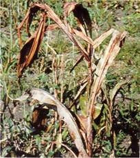

PESTS OF SORGHUM :: Major Pests :: Shoot Bug
4. Shoot bug: Peregrinus maidis (Delphacidae, Hemiptera)
Distribution and status: Karnataka, Tamil Nadu Andhra Pradesh and Madhya Pradesh
Host range: Sorghum, maize, rice, millets
Damage symptoms: Adults and nymphs suck sap from plants. The attacked plants become unhealthy stunted and yellow. The leaves wither from top downwards. Panicle formation is inhibited and the plants die if attack is severe. Honeydew secreted by the bug causes growth of sooty mould on leaves. The midribs of the leaves turn red due to egg-laying and may dry up subsequently.
|
 |
|
|
Bionomics: The adult is yellowish brown to dark brown with translucent wings. The brachypterous female is yellowish while macropterous female is yellowish brown and male dark brown. It lays eggs in groups of 1-4 inside the leaf tissue and covered with a white waxy substance. The fecundity of the bug is 97 eggs / female. The egg period lasts for seven days. The nymphal stage undergoes five instars in 16 days. The total life cycle is completed in 18-31 days.
Management
- Conserve egg parasitoids viz., Paranagrus optabilis, Octetrastichus indicus and Predators - Coccinella septumpunctatum, Menochilus sexmaculatus, Geocoris tricolor.
- Spray dimethoate or methyl demeton 500 ml in 500 L of water
|
|